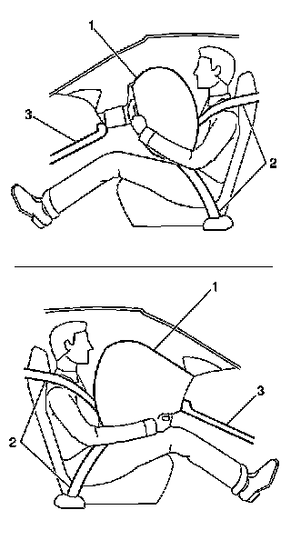

Air Bag Systems: Description and Operation
SIR System Description and Operation
SIR System Overview

The Supplemental Inflatable Restraint (SIR) System supplements the protection offered by the occupants Seat Belt System (2). The SIR system may contain several inflator modules located throughout the vehicle, i.e. steering wheel module (1) and instrument panel (I/P) module (1). In addition to inflator modules, the vehicle contains an inflatable restraint Passenger Presence System (PPS) that measures the weight of an occupant sitting in the front passenger seat. The PPS uses the weight of the occupant to determine if the I/P inflator module will be enabled or disabled. Each inflator module has a deployment loop that is controlled by the sensing and diagnostic module (SDM) mounted inside the vehicle. The SDM determines the severity of a collision with the assistance of various sensor inputs. When the SDM detects a collision of sufficient force it will process the information provided by the sensors to further support air bag deployment. The SDM performs continuous diagnostic monitoring of the SIR system electrical components. Upon detection of a circuit malfunction, the SDM will set a DTC and inform the driver by requesting the instrument panel cluster (IPC) to turn the AIR BAG indicator ON. The steering column (1) and knee bolsters (3) are designed to absorb energy and compress during frontal collisions in order to limit leg movement and decrease the chance of injury to the driver and passenger.
Frontal SIR System Description
The frontal Supplemental Inflatable Restraint (SIR) System consists of the following components:
* AIR BAG indicator located on the instrument panel cluster (IPC)
* Driver and passenger knee bolsters
* Inflatable restraint front end sensors (left/right)
* Inflatable restraint PASSENGER AIR BAG ON/OFF indicator
* Inflatable restraint Passenger Presence System (PPS)
* Inflatable restraint passenger seat belt tension sensor
* Inflatable restraint seat position sensor (SPS) (left)
* Inflatable restraint sensing and diagnostic module (SDM)
* Inflatable restraint steering wheel module
* Inflatable restraint steering wheel module coil
* Inflatable restraint wiring harnesses
* Seat belt pretensioners (left/right)
* Steering wheel and column
A frontal collision of sufficient force will deploy the frontal air bags. The SDM contains a sensing device that converts vehicle velocity changes to an electrical signal. In the event of a frontal collision, the SDM receives a signal from the front end sensors which assists the SDM in determining the severity of some frontal collisions. The SDM contains a microprocessor that performs calculations using the measured accelerations. The SDM compares these calculations to a value stored in memory. When the generated calculations exceed the stored value, the SDM will cause current to flow through the frontal deployment loops deploying the frontal air bags. Once the air bags are inflated they quickly deflate through the air bag vent holes. After the air bags have deployed, the SDM sets a diagnostic trouble code (DTC) and requests the IPC to turn the AIR BAG indicator ON. The SDM, instrument panel (I/P) module, steering wheel module, steering wheel module coil and the connecting wires makeup the frontal deployment loops. The SDM continuously monitors the deployment loops for malfunctions and requests the IPC to turn the AIR BAG indicator ON if a fault is detected.
Side SIR System Description (Front)
The side Supplemental Inflatable Restraint (SIR) System (front) consists of the following components:
* AIR BAG indicator located in the instrument panel cluster (IPC)
* Inflatable restraint roof rail modules front/rear, (left/right)
* Inflatable restraint sensing and diagnostic module (SDM)
* Inflatable restraint side impact sensors (SIS) (left/right)
* Inflatable restraint vehicle rollover sensor
* Inflatable restraint wiring harnesses
* Seat belt pretensioners (left/right)
The roof rail modules (front/rear) are located in the headliner along the roof rails. The roof rail modules contain a housing, inflatable air bag, initiating device, and a canister of gas generating material. The initiator is part of the roof rail module deployment loop. When a side impact of sufficient force occurs the SIS detects the impact and sends a signal to the SDM. The SDM compares the signal received from the SIS to a value stored in memory. When the generated signal exceeds the stored value, the SDM will cause current to flow through the side deployment loop deploying the roof rail air bag. The SDM, roof rail modules (front) and the connecting wires makeup the side deployment loops. The SDM continuously monitors the deployment loops for malfunctions and turns the AIR BAG indicator ON if a fault is present. Each roof rail module is equipped with a shorting bar located on the connector of the module. The shorting bar shorts the roof rail module deployment loop circuitry to prevent unwanted deployment of the air bag when servicing the inflator module.
Inflatable Restraint Sensing and Diagnostic Module (SDM)
The sensing and diagnostic module (SDM) is a microprocessor and the control center for the Supplemental Inflatable Restraint (SIR) System. The SDM contains internal sensors along with several external sensors, if equipped, mounted at various locations on the vehicle. In the event of a collision, the SDM performs calculations using the signals received from the internal and external sensors. The SDM compares the results of the calculations to values stored in memory. When these calculations exceed the stored value, the SDM will cause current to flow through the appropriate deployment loops to deploy the air bags. The SDM records the SIR System status when a deployment occurs and requests the instrument panel cluster (IPC) to turn the AIR BAG indicator ON. The SDM performs continuous diagnostic monitoring of the SIR System electrical components and circuitry when the ignition is turned ON. If the SDM detects a malfunction, a DTC will be stored and the SDM will request the IPC to turn the AIR BAG indicator ON. In the event that battery voltage is lost during a collision, the SDM maintains a 23-volt loop reserve (23 VLR) for deployment of the air bags. It is important to note, when disabling the SIR System for servicing or rescue operations to allow the 23 VLR to dissipate, which could take up to 1 minute.
Inflatable Restraint Passenger Presence System (PPS)
Important: The Passenger Presence System (PPS) is a calibrated unit. When replacing the assembly all parts in the service kit must remain together. Do not mix any of the old parts with the new parts. After repairing or replacing the PPS, the system must be rezeroed in order to function properly.
The PPS is used to monitor the weight of an occupant on the front outboard passenger seat and communicate the status to the sensing and diagnostic module (SDM) whether to enable or suppress the deployment of the instrument panel (I/P) module. The PPS consist of an electronic control module, silicone filled sensor pad, pressure sensor, seat belt tension sensor, wiring harness, and PASSENGER AIR BAG ON/OFF indicator. The silicone filled sensor pad is located under the passenger seat foam cushion and is connected by a hose clamped to the pressure sensor. The weight of the occupant sitting in the front passenger seat is measured as a pressure change within the bladder by the pressure sensor. The pressure sensor sends a voltage signal to the PPS module. If the pressure from the occupants weight is less than a specified value, the PPS module will send a suppress signal to the SDM to disable the I/P module. If the pressure from the occupants weight is higher than a specified value, the PPS module will send an enable signal to the SDM to enable the I/P module. The PPS module will notify the customer of the enable/disable status by turning on one of the PASSENGER AIR BAG ON/OFF indicator located on the overhead console. The PPS monitors itself for faults and will set diagnostic trouble codes (DTC) if a fault is detected. The PPS will also notify the SDM of a fault and the SDM will set DTC B0081 and request the instrument panel cluster (IPC) to turn ON the AIR BAG indicator located on the IPC.
Inflatable Restraint Seat Position Sensors (SPS)
The seat position sensor (SPS) is used to determine the proximity of a front driver position with respect to the frontal air bag. The SPS interfaces with the sensing and diagnostic module (SDM). The state of the SPS allows the SDM to disable stage 2 of the frontal air bag for a front seat that is forward of a forward/rearward point in seat track travel. The SPS is a Hall effect sensor that is mounted on the outboard seat track of the driver seat. The seat track includes a metal bracket that shunts the SPS magnetic circuit creating two states of seat position. The shunted state represents a rearward seat position. The non-shunted state represents a forward position. The SPS provides 2 current ranges, one range for the shunted state and a second range for a non-shunted state. These 2 states are inputs to the SDM. State 1 (shunted) being the rearward threshold and state 2 (non-shunted) being the forward threshold. When the SDM receives input from a SPS that state 1 threshold is reached (seat is rearward) the SDM will not disable stage 2 deployment, if required by the deployment sensors. When state 2 threshold is reached (seat is forward) the SDM will disable stage 2 deployment on the side the seat is forward. The SDM monitors the SPS circuit and if a fault is detected the SDM will set code B0079 and defaults to disabling stage 2 frontal deployment.
Inflatable Restraint Passenger Seat Belt Tension Sensor
The seat belt tension sensor is used to enhance the Passenger Presence System (PPS) when an infant car seat is properly restrained on the front outboard passenger seat. The seat belt tension sensor is a 3-wire potentiometer mounted on the lower seat belt anchor and provides an input to the PPS module. When an infant car seat is properly restrained on the front passenger seat, the seat belt is tightly secured through the infant car seat. The seat belt pulls on the tension sensor and changes the voltage signal to the PPS module. The PPS module uses the voltage signal to help determine if a tightly belted infant car seat is installed. The PPS uses the inputs from the seat belt tension sensor and the PPS pressure sensor to determine if the instrument panel (I/P) module should be suppressed or enabled. The PPS monitors the seat belt tension sensor circuits and sets DTC B0071 if a fault is detected.
Inflatable Restraint Vehicle Rollover Sensor
The vehicle rollover sensor is used to supplement the side Supplemental Inflatable Restraint (SIR) System. The sensing and diagnostic module (SDM) uses the input from the vehicle rollover sensor to assist in determining the severity of a vehicle rollover or near rollover condition. If the SDM determines a deployment is warranted, the SDM will cause current to flow through the deployment loops deploying the inflatable restraint roof rail modules.
AIR BAG Indicator
The AIR BAG indicator, located on the instrument panel cluster (IPC) is used to notify the driver of Supplemental Inflatable Restraint (SIR) System malfunctions and to verify that the sensing and diagnostic module (SDM) is communicating with the IPC. When the ignition is turned ON, the SDM is supplied with battery voltage and requests the IPC to flash the AIR BAG indicator 7 times. While flashing the indicator, the SDM conducts test on all SIR system components and circuits. If no malfunctions are detected the SDM will communicate with the IPC through the serial data circuit and request the IPC to turn the AIR BAG indicator OFF. The SDM provides continuous monitoring of the air bag circuits by conducting a sequence of checks. If a malfunction is detected the SDM will store a diagnostic trouble code (DTC) and request the IPC to turn the AIR BAG indicator ON. The presence of a SIR system malfunction could result in non-deployment of the air bags. The AIR BAG indicator will remain ON until the malfunction has been repaired.
Inflatable Restraint PASSENGER AIR BAG ON/OFF Indicator
The PASSENGER AIR BAG ON/OFF indicator located on the overhead console is used to notify the driver when the Passenger Presence System (PPS) has enabled or disabled the instrument panel (I/P) inflator module. The PPS air bag indicators will also inform the driver of any PPS malfunctions. When the ignition is turned on, the SDM is supplied with battery voltage and commands both PASSENGER AIR BAG ON/OFF indicators ON for 5 seconds. The PPS module conducts tests on the PPS components and circuits while both ON/OFF indicators are ON. If no malfunctions are detected the PPS module will turn the PASSENGER AIR BAG indicator ON or OFF depending on the status of the PPS. If a malfunction is detected, the PPS module will store a diagnostic trouble code (DTC), default the PPS to the OFF state and communicate with the sensing and diagnostic module (SDM) that a DTC has been set. When the SDM detects that the PPS has set a DTC, the SDM will set either DTC B0056 or B0081 and request the instrument panel cluster (IPC) to turn the AIR BAG indicator located on the IPC ON. This is done to notify the driver of any PPS malfunctions. The presence of a Supplemental Inflatable Restraint (SIR) System malfunction could result in non-deployment of the air bags. The AIR BAG indicator will remain ON until the malfunction has been repaired.
Dual Stage Inflator Modules
Dual stage inflator modules contain a housing, inflatable air bag, 2 initiating devices, canister of gas generating material and, in some cases, stored compressed gas. The 2 initiators are part of the inflator module deployment loop. The inflator modules have 2 stages of deployment, which varies the amount of restraint to the occupant according to the collision severity. For moderate frontal collisions the inflator modules deploy at less than full deployment which consists of stage 1 of the inflator module. For more severe frontal collisions a full deployment is initiated which consists of stage 1 and stage 2 of the inflator module. When the vehicle is involved in a collision of sufficient force, the sensing and diagnostic module (SDM) will cause current to flow through the deployment loops to the initiator. Current passing through the initiator ignites the material in the canister producing a rapid generation of gas and the release of compressed gas, if present. The gas produced from this reaction rapidly inflates the air bag. Once the air bag is inflated it quickly deflates through the air bag vent holes.
Each dual stage inflator module is equipped with a shorting bar located on the connectors of the module. The shorting bar shorts the inflator module deployment loop circuitry to prevent unwanted deployment of the air bag when it is disconnected.
Inflatable Restraint Steering Wheel Module Coil
The steering wheel module coil is attached to the steering column and is located under the steering wheel. The steering wheel module coil consists of 2 or more current-carrying coils. The coils allow the rotation of the steering wheel while maintaining continuous electrical contact between the driver deployment loop and the steering wheel module. Four coil wires are used for the steering wheel module deployment loop. Additional coil wires are used for accessories attached to the steering wheel depending on the vehicle model. The steering wheel module coil connector is located near the base of the steering column. The connector contains a shorting bar that shorts the steering wheel module coil deployment loop circuitry to prevent unwanted deployment of the air bag when it is disconnected.
Inflatable Restraint Front End Sensors
The front end sensors are equipped on vehicles to supplement the Supplemental Inflatable Restraint (SIR) System performance. The front end sensors are electronic and are not part of the deployment loops, but instead provide inputs to the sensing and diagnostic module (SDM). The front end sensors can assist in determining the severity of some frontal collisions. The SDM uses the input from the front end sensors to assist in determining the severity of a frontal collision further supporting air bag deployment. If the SDM determines a deployment is warranted, the SDM will cause current to flow through the deployment loops deploying the frontal air bags.
Inflatable Restraint Side Impact Sensor (SIS)
The side impact sensor (SIS) contains a sensing device which monitors vehicle acceleration and velocity changes to detect side collisions that are sever enough to warrant side SIR deployment. The SIS is not part of the deployment loop, but instead provides an input to the SDM. The SDM contains a microprocessor that performs calculations using the measured accelerations and compares these calculations to a value stored in memory.
Inflatable Restraint Wiring Harnesses
The wiring harnesses connect the sensing and diagnostic module (SDM), inflator modules, Passenger Presence System (PPS), front end sensors, seat position sensors (SPS), passenger seat belt tension retractor sensor, rollover sensor, side impact sensors and the serial data circuit together using connectors. SIR deployment loop connectors are yellow in color for easy identification. When repairing Supplemental Inflatable Restraint (SIR) System wiring harnesses, follow the proper testing and wiring repair procedures outlined in this manual.
Seat Belt Pretensioner
The seat belt pretensioner consist of a housing, a seat belt retractor, the seat belt webbing, an initiator, and a canister of gas generating materials. The initiator is part of the seat belt pretensioner deployment loop. When the vehicle is involved in a collision of sufficient force, the sensing and diagnostic module (SDM) causes current to flow through the seat belt deployment loops to the initiator. Current passing through the initiator ignites the material in the canister producing a rapid generation of gas. The gas produced from this reaction deploys the seat belt pretensioner and retracts the seat belt webbing, which removes all of the slack in the seat belts. Depending on the severity of the collision, the seat belt pretensioner may deploy without the frontal inflator modules deploying, or they will deploy immediately before the frontal inflator modules deploy. Each seat belt pretensioner is equipped with a shorting bar that is located in the connector of the seat belt pretensioner. The shorting bar shorts the seat belt pretensioner circuitry to prevent unwanted deployment of the seat belt pretensioner when the connector is disconnected.
Steering Wheel and Column
The steering wheel and column are designed to absorb energy when driver contact is made with the steering wheel or inflated air bag. In a frontal collision the driver may contact the steering wheel directly or load the steering wheel and column through the inflated air bag. When the driver applies load to the air bag or steering wheel the column will compress downward absorbing some of the impact, helping to reduce bodily injuries to the driver. The steering wheel and column must be inspected for damage after a collision.
Driver and Passenger Knee Bolsters
The knee bolsters are designed to help restrain the lower torsos of front seat occupants by absorbing energy through the front seat occupants upper legs. In a frontal collision the front seat occupants legs may come in contact with the knee bolsters. The knee bolsters are designed to crush or deform absorbing some of the impact, which helps to reduce bodily injuries. The driver and passenger knee bolsters are located in the lower part of the instrument panel and must be inspected for damage after a collision.